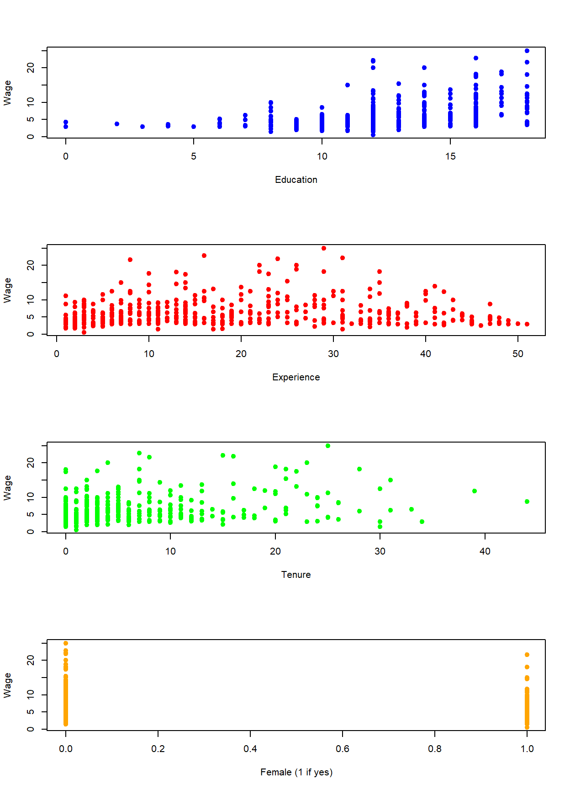

8.4 Qualitative (Dummy) Variables
Quantitative variables are easy to model and interpret because they take on numerical values and are readily dealt with by computers. Qualitative variables, however, are variables that do not naturally deliver numerical values. Examples of qualitative variables are:
Gender (male, female)
Marital status (yes, no)
Ethnicity (white, Hispanic, Asian, etc.)
Qualitative variables are made operational for regression analysis by creating dummy variables. A dummy variable can only take on two values (i.e., 0 or 1) and should be thought of as a switch.
1 implies the switch is on, meaning that the designated trait is present for an individual observation.
0 implies the switch is off, meaning that the trait is absent for an individual observation.
We can consider two different types of dummy variables depending on if we model the presence or absence of a trait to impact the intercept of the model or the relationship (or slope) between the dependent variable and other independent variables. We will cover these in turn.
8.4.1 Intercept dummy variable
An intercept dummy variable is a qualitative variable that stands alone in a regression just like other quantitative variables we have encountered. Let us illustrate this by adding an intercept dummy variable to a wage analysis.
Suppose you are a consultant hired by a firm to help determine the underlying features of the current wage structure for their employees. You want to understand why some individuals have wage rates that are different from others. Let our dependent variable be wage (the hourly wage of an individual employee) and the independent variables be given by…
educ is the total years of education of an individual employee
exper is the total years of experience an individual employee had prior to starting with the company
tenure is the number of years an employee has been working with the firm.
These independent variables are all quantitative because they directly translate to numbers. We can also add a qualitative variable to this list of independent variables to see if gender can help explain why some people earn a higher wage than others. In particular, consider the qualitative variable female which equals 1 if the individual is female and 0 if the individual is not (i.e., male).
The Specified model (the PRF) now becomes
\[wage_i=\beta_0+\beta_1educ_i+\beta_2exper_i+\beta_3tenure_i+\beta_4female_i+\varepsilon_i\]
Note that the slope of the three quantitative variables are completely standard. The slope with respect to the dummy variable is similar, but needs to be interpreted in a specific manner. In particular, since we normally interpret slopes with respect to a unit increase in the independent variable, and the fact that a dummy variable can only go up one unit (i.e., from 0 to 1), we therefore interpret a dummy variable accordingly.
\[\beta_4 = \frac{\Delta wage}{\Delta female}\]
Holding education, tenure, and experience constant, a female earns a \(\beta_4\) difference in wage relative to a male, on average
Note that the dummy variable is constructed such that males receive a 0 while females receive a 1. This implies that \(\beta_4\) will denote the average change in a female’s wage relative to a male’s wage. If \(\beta_4 < 0\), then this would imply that a female’s average wage is less than a male’s.
After loading the wage1 data directly from the wooldridge package (see code below), the four independent variables are illustrated in the scatter plots below. Notice that even though the dummy variable takes on only two numbers by design, we can still see how it effectively splits the observations into the two groups.
data(wage1, package = "wooldridge")
par(mfrow = c(4,1))
plot(wage1$educ,wage1$wage,
col = "blue", pch = 19, cex = 1,
xlab = "Education", ylab = "Wage")
plot(wage1$exper,wage1$wage,
col = "red", pch = 19, cex = 1,
xlab = "Experience", ylab = "Wage")
plot(wage1$tenure,wage1$wage,
col = "green", pch = 19, cex = 1,
xlab = "Tenure", ylab = "Wage")
plot(wage1$female,wage1$wage,
col = "orange", pch = 19, cex = 1,
xlab = "Female (1 if yes)", ylab = "Wage")
There is no difference between estimating quantitative and qualitative variables as far as R in concerned.
REG <- lm(wage~educ+exper+tenure,data=wage1)
coef(REG)## (Intercept) educ exper tenure
## -2.87273482 0.59896507 0.02233952 0.16926865REG <- lm(wage~educ+exper+tenure+female,data=wage1)
coef(REG)## (Intercept) educ exper tenure female
## -1.56793870 0.57150477 0.02539587 0.14100506 -1.81085218Interpretations of the other independent variables are unchanged. However, \(\hat{\beta}_4 = -1.81\) suggests the following:
Holding education, tenure, and experience constant, a female earns $1.81 less in wages relative to a male, on average
This states that we can compare two individuals with the same education, experience, and tenure levels but differ in gender and conclude that the male earns more.
Let us examine this further to show exactly why this type of qualitative variable is called an intercept dummy variable. Since the dummy variable can only take on the values 1 or 0, we can write down the PRF for both cases. In particular, the PRF for a male has \(female_i = 0\) while the PRF for a female has \(female_i = 1\).
\[Male: wage_i=\beta_0+\beta_1educ_i+\beta_2exper_i+\beta_3tenure_i+\varepsilon_i\] \[Female: wage_i=(\beta_0+\beta_4)+\beta_1educ_i+\beta_2exper_i+\beta_3tenure_i+\varepsilon_i\]
Notice that \(\beta_4\) does not appear in the PRF for males because the female variable equals 0, while it appears alone in the PRF for females because the female variable equals 1. After rearranging a bit, you can see that the intercept term of the PRF for males is \(\beta_0\) while the intercept term of the PRF for females is \((\beta_0+\beta_4)\). This illustrates that if you hold the other three independent variables constant, the difference between the wage rates of a male and female is \(\beta_4\) on average. In other words, if you plug in the same numbers for education, experience, and tenure in the two PRFs above, then the difference in wages between men and women who share these traits will be \(\beta_4\).
8.4.2 Slope dummy variable
While an intercept dummy variable is a very powerful modeling tool, it makes one glaring assumption. Consider the regression results above, namely the estimated slope coefficient with respect to tenure
\[\hat{\beta}_3 = 0.14\]
The interpretation of this slope coefficient is as follows:
Holding education, experience, and gender constant, an individual will receive $0.14 more in wages for every additional year of tenure, on average.
In particular, this states that a female receives the same annual raise than a male. This is an assumption of the model, because the model is incapable of differentiating the annual wage with respect to gender. We can extend the model to explicitly test this assumption with the use of a slope dummy variable.
A slope dummy variable is an example of an interaction term. In other words, it is a new variable that arises from taking the product of two variables. In this case, in order for us to examine the gender difference of tenure, we consider the product between female and tenure.
\[\begin{aligned} wage_i = \;&\beta_0+\beta_1educ_i+\beta_2exper_i+ \beta_3tenure_i+\beta_4female_i+... \\ &\beta_5(tenure_i*female_i)+\varepsilon_i \end{aligned}\]
Like our illustration of an intercept dummy, we can see what this PRF looks like for males and females.
\[Male: wage_i=\beta_0+\beta_1educ_i+\beta_2exper_i+\beta_3tenure_i+\varepsilon_i\] \[Female: wage_i=(\beta_0+\beta_4)+\beta_1educ_i+\beta_2exper_i+(\beta_3+\beta_5)tenure_i+\varepsilon_i\]
For males, the PRF looks exactly as it does when we only considered an intercept dummy because both \(\beta_4\) and \(\beta_5\) drop out when \(female_i = 0\). For females, we can see the potential change in the intercept (as before), but we can now see a potential change in the slope with respect to tenure.
REG <- lm(wage~educ+exper+tenure+
female+female*tenure,data=wage1)
coef(REG)## (Intercept) educ exper tenure female tenure:female
## -2.00229568 0.58279061 0.02834532 0.17780235 -1.17787884 -0.14359567Our extended model now gives a better picture of the gender impact on wages. \[\hat{\beta}_4 = -1.18\]
Holding all else constant, a female earns $1.18 less than a male on average.
When considering the impact of tenure on wages, we could show the difference explicitly:
\[Males: \frac{\Delta wage}{\Delta tenure} = \hat{\beta}_3=0.18\] \[Females: \frac{\Delta wage}{\Delta tenure} = \hat{\beta}_3+\hat{\beta}_5=0.18-0.14=0.04\]
The regression states that males receive an $0.18 increase in wages on average for every additional year in tenure (holding all else constant), while females receive only a $0.04 increase in wages on average.
Note that we could also consider slope dummy variables with respect to education as well as experience. You should do those on your own.
8.4.3 What if there are more than two categories?
Since a dummy variable can take on either a zero or a one, it is perfectly designed to identify two categories. This might be fine for some variables like yes / no or win / lose, but what if a variable has more than two categories? Examples would be direct extensions of the above variables: yes / no / maybe or win / lose / draw.
The rule of thumb (to be explained in detail soon) is:
A variable containing \(N\) categories requires \(N-1\) dummy variables.
This rule actually applies to our standard case, because we can model \(N=2\) categories with \(N-1=1\) dummy variables. In our example above, we wanted to identify 2 categories of gender (male or female) so we needed 1 dummy variable. However, we need to take a little more care and follow additional steps when dealing with more than one category. Suppose we extended our gender characteristics to identify a third gender category (non-binary) in order to account for individuals who do not subscribe to one of the two traditional categories. We will use this scenario to illustrate how our model gets extended.
- Identify a benchmark category
A benchmark category is one of the characteristics that the researcher identifies as the category that all other categories get compared against. In our gender example, suppose we choose male as our benchmark characteristic. You will find that this choice is arbitrary, but it may have implications.
- Construct appropriate dummy variables
Once the benchmark category has been established as male, we need two dummy variables: one that identifies individuals as female and one that identifies individuals as non-binary.
\[female_i = 1 \mbox{ if female; }\; 0 \mbox{ if male or non-binary }\]
\[\mbox{non-binary}_i = 1 \mbox{ if other; }\; 0 \mbox{ if male or female }\]
Note that each dummy variable is still a switch that signals the presence or absence of a characteristic. However, when BOTH dummy variables are zero at the same time… you have your benchmark category. That is how you can identify three categories with only two dummy variables.
To illustrate, consider the original model restricting attention to intercept dummies.
\[wage_i=\beta_0+\beta_1educ_i+\beta_2exper_i+\beta_3tenure_i+\beta_4female_i +\beta_5(\mbox{non-binary}_i) +\varepsilon_i\]
We can write down what the model looks like for each of our three categories:
\[Male: wage_i=\beta_0+\beta_1educ_i+\beta_2exper_i+\beta_3tenure_i+\varepsilon_i\]
\[Female: wage_i=(\beta_0+\beta_4)+\beta_1educ_i+\beta_2exper_i+\beta_3tenure_i+\varepsilon_i\]
\[\mbox{Non-binary}: wage_i=(\beta_0+\beta_5)+\beta_1educ_i+\beta_2exper_i+\beta_3tenure_i+\varepsilon_i\]
When comparing these three equations, you can hopefully see how the benchmark category comes into play. The first equation is essentially the benchmark equation, indicating that \(\beta_0\) is the intercept term for males. The second equation is for females, and shows how the intercept for females differs from males (given by \(\beta_4\)). The third equation is for those identifying as non-binary, and shows how the intercept for these individuals differs from males (given by \(\beta_5\)). Note that all of the other slopes are assumed to be identical here (but we could consider slope dummies like above).
One detail about the application above worthy of mention is that the coefficients \(\beta_4\) and \(\beta_5\) show how each category compares to the benchmark category. We can test if these coefficients are significantly different from zero with standard hypothesis tests. For example:
\[H_0: \; \beta_4 = 0 \quad H_1: \; \beta_4 \neq 0\]
However, if we show that \(\beta_4\) and \(\beta_5\) were significantly different than zero, we can only conclude that females and individuals in the non-binary category are treated differently than males (because it was the benchmark category). We cannot determine if female and non-binary are significantly different from each other without a joint hypothesis test (examined below) or a choice of a new benchmark category. For example, you can easily change the benchmark category to be female and end up with a formal test of the difference between female and non-binary.
8.4.4 A Final Application
Let us consider an in-depth application where dummy variables are essential for making time-series variables ready for analysis by removing a seasonal cycle.
Consider the following time series data:
library(readxl)
AUTO <- read_excel("data/AUTO_SA.xlsx")
plot(AUTO$INDEX,AUTO$AUTOSALE,
type = "l", main = "U.S. Retail Auto Sales ($bn)",
col = "blue", xlab = "Date", ylab = "Sales", xaxt = "n")
xtick <- seq(1,length(AUTO$INDEX), by = 36)
axis(side=1, at=xtick, labels = FALSE)
text(x=xtick, par("usr")[3],
labels = c("1970","1973","1976","1979","1982","1985",
"1988","1991","1994","1997"),
pos = 1, xpd = TRUE)
The figure illustrates retail automobile sales, denoted in billions of dollars, for the US between 1970 and 1998. As with most time series, this data is actually a combination of several components.
Trend: The long-term (i.e., average) increase or decrease in value over time.
Seasonality: The repeating (i.e., predictable) short-term cycle in the series caused by the seasons or months of the year
Random: The information in the series that is not due to a long-term trend or a short-term cyclical pattern is what we would actually like to explain.
Lets us decompose this series in several steps to not only give us more exposure to dummy variables, but to also learn a bit more about time series data.
Make a Nominal Series a Real Series
The auto sales series above is known as a nominal series because the dollar values for each time period are expressed in the prices of that time period. For example, the data indicates that the US had $4.79 billion in auto sales in January 1970 and $47.4 billion in January 1998. We cannot say that auto sales increased by ten times during this time period, because the US also experienced inflation during this time period. In particular, $4.79 billion is denoted in 1970 dollars while $47.4 billion is denoted in 1998 dollars. In order to remove any inflationary distortions from the data, we need to divide these numbers by some measure of how average prices have evolved. There are many ways of doing this, but a direct method is to use the consumer price index or CPI. The CPI tells us how average prices have evolved relative to a benchmark year that is set to 100 (or 1). If the CPI differs in a particular year, then we know how prices have changes relative to the benchmark year.
plot(AUTO$INDEX,AUTO$CPI,
type = "l", main = "Consumer Price Index (1990 = 100)",
col = "blue", xlab = "Date", ylab = "Index", xaxt = "n")
xtick <- seq(1,length(AUTO$INDEX), by = 36)
axis(side=1, at=xtick, labels = FALSE)
text(x=xtick, par("usr")[3],
labels = c("1970","1973","1976","1979","1982","1985",
"1988","1991","1994","1997"),
pos = 1, xpd = TRUE)
The figure above illustrates the CPI where 1990 is denoted as the benchmark year (because it is set to 1). All other time periods now have prices calculated relative to the benchmark. For example, the CPI in January 1970 is \(0.30\) which means that average prices were 70 percent lower than what they were in 1990.
We use the CPI to transform a nominal series into a real series. For example:
\[\mbox{Real Auto Sales} = \frac{\mbox{Nominal Auto Sales}}{\mbox{CPI}}\]
AUTO$RAUTO = AUTO$AUTOSALE / AUTO$CPI
plot(AUTO$INDEX,AUTO$RAUTO,
type = "l", main = "U.S. Retail Auto Sales (1990 $bn)",
col = "red", xlab = "Date", ylab = "Real Sales", xaxt = "n")
xtick <- seq(1,length(AUTO$INDEX), by = 36)
axis(side=1, at=xtick, labels = FALSE)
text(x=xtick, par("usr")[3],
labels = c("1970","1973","1976","1979","1982","1985",
"1988","1991","1994","1997"),
pos = 1, xpd = TRUE)
This figure now shows the Real US Auto Sales denoted in 1990 prices. For example, January 1970 experienced $16.15 billion in auto sales while January 1998 experienced $47.05. Now that these two numbers are both stated using the same price level, we can say that car sales increased by three times (not ten) over the time period.
Remove a Trend
Our real sales data still shows signs of both a trend and a seasonal cycle that need to be removed. Let us start by removing the trend.
Given that a trend is defined as the average change in a time series, we are technically attempting to identify (and remove) the average change in the series given a one-unit increase in time. Since this data is monthly, we are attempting to identify the average monthly change in the series. We can identify the trend with a regression equation.
AUTO$TREND <- seq(1,length(AUTO$INDEX), by = 1)
DTRND <- lm(AUTO$RAUTO ~ AUTO$TREND)
coef(DTRND)## (Intercept) AUTO$TREND
## 18.37195789 0.05942082plot(AUTO$INDEX,AUTO$RAUTO,
type = "l", main = "U.S. Retail Auto Sales (1990 $bn)",
col = "green", xlab = "Date", ylab = "Real Sales", xaxt = "n")
xtick <- seq(1,length(AUTO$INDEX), by = 36)
axis(side=1, at=xtick, labels = FALSE)
text(x=xtick, par("usr")[3],
labels = c("1970","1973","1976","1979","1982","1985",
"1988","1991","1994","1997"),
pos = 1, xpd = TRUE)
lines(AUTO$INDEX,fitted(DTRND), col = "black")
The code above does three things. First, it creates a variable called TREND which is simply an increasing list of numbers from 1 (the first observation) to 341 (the last observation). Each increase is an additional month. Second, it runs a regression where real auto sales is the dependent variable while trend is the only independent variable.
\[Real\;Sales_t = \beta_0 + \beta_1 \; Trend_t + \varepsilon_t\]
The slope coefficient with respect to the trend is \(0.059\) which means that average auto sales increase by roughly \(0.06\) billion 1990 dollars each month on average. Finally, it plots the real series as well as our calculated trend together. Notice how the predicted sales coming from the trend line is straight - indicating how this is only the expected sales for a particular month given information only on the evolution of time.
Comparing these two lines in the figure should give you an idea how the trend gets removed from a time series. If we want to remove the predictable change in a series over time, then we can subtract these numbers from the original series once we estimate the trend. Note however that this is already done for you, because the residual of the above regression is actually the information in auto sales that cannot be explained by the predictable evolution of time.
AUTO$RAUTO_DT = residuals(DTRND)
plot(AUTO$INDEX,AUTO$RAUTO_DT,
type = "l",
main = "U.S. Retail Auto Sales (1990 $bn, Dentrended)",
col = "cyan", xlab = "Date",
ylab = "Real, Detrended Sales", xaxt = "n")
xtick <- seq(1,length(AUTO$INDEX), by = 36)
axis(side=1, at=xtick, labels = FALSE)
text(x=xtick, par("usr")[3],
labels = c("1970","1973","1976","1979","1982","1985",
"1988","1991","1994","1997"),
pos = 1, xpd = TRUE)
The above figure illustrates the detrended data, where negative numbers indicate that observations are below trend while positive numbers indicate that observations are above trend.
Remove Seasonality
The figure above still includes a seasonal component which needs to be removed. We will do this using dummy variables.
Identifying seasonality generally refers to the short-run average pattern observed in the series. Since this is monthly data, we would like to observe the average sales in each month. If this were quarterly series, we would like to observe the average sales in each season (summer, fall, winter, spring). We can identify these average amounts by using dummy variables to identify if each observation falls into a particular month.
The first step is to establish a benchmark month. This is essentially an arbitrary decision, so lets just go with December (i.e., the twelfth month of the year).
head(AUTO)## # A tibble: 6 x 9
## INDEX YEAR MONTH DATE AUTOSALE CPI RAUTO TREND RAUTO_DT
## <dbl> <dbl> <dbl> <dbl> <dbl> <dbl> <dbl> <dbl> <dbl>
## 1 1 1970 1 1970 4.79 0.297 16.2 1 -2.28
## 2 2 1970 2 1970. 4.96 0.298 16.6 2 -1.88
## 3 3 1970 3 1970. 5.64 0.300 18.8 3 0.256
## 4 4 1970 4 1970. 5.98 0.302 19.8 4 1.16
## 5 5 1970 5 1970. 6.08 0.303 20.1 5 1.38
## 6 6 1970 6 1970. 6.55 0.305 21.5 6 2.77Note that our dataset already has a variable called month which identifies 1 as January, 2 as February, etc. This will make the creation of dummy variables very easy.
Since we want to break this data into 12 categories, then we will need to construct 11 dummy variables. One dummy variable will deliver a 1 every time the observation is in January (0 elsewhere), one dummy variable will deliver a 1 every time the observation is in February (0 elsewhere), and so on. We can do this by hand (which is tedious), or we can use a new package called fastDummies.
If you are using fastDummies for the first time, you will want to install it:
install.packages("fastDummies")This package is designed to accept a variable and construct dummy variables for however many categories it can identify. For example:
library(fastDummies)
AUTO <- dummy_cols(AUTO, select_columns = 'MONTH')
names(AUTO)## [1] "INDEX" "YEAR" "MONTH" "DATE" "AUTOSALE" "CPI" "RAUTO" "TREND" "RAUTO_DT"
## [10] "MONTH_1" "MONTH_2" "MONTH_3" "MONTH_4" "MONTH_5" "MONTH_6" "MONTH_7" "MONTH_8" "MONTH_9"
## [19] "MONTH_10" "MONTH_11" "MONTH_12"Note how the dataset AUTO now contains 21 variables when it previously contained 9. This is because the above lines of code created 12 new variables - a dummy variable for each month of the year (1-12). Since we are considering the 12th month as our benchmark, we simply do not include it in our regression.
DS <- lm(RAUTO_DT ~ MONTH_1 + MONTH_2 + MONTH_3 + MONTH_4 +
MONTH_5 + MONTH_6 + MONTH_7 + MONTH_8 + MONTH_9 +
MONTH_10 + MONTH_11, data = AUTO)
summary(DS)##
## Call:
## lm(formula = RAUTO_DT ~ MONTH_1 + MONTH_2 + MONTH_3 + MONTH_4 +
## MONTH_5 + MONTH_6 + MONTH_7 + MONTH_8 + MONTH_9 + MONTH_10 +
## MONTH_11, data = AUTO)
##
## Residuals:
## Min 1Q Median 3Q Max
## -8.3877 -1.8444 0.4071 2.3868 9.4046
##
## Coefficients:
## Estimate Std. Error t value Pr(>|t|)
## (Intercept) -3.2222 0.6231 -5.172 4.04e-07 ***
## MONTH_1 -0.5227 0.8735 -0.598 0.550014
## MONTH_2 0.5072 0.8735 0.581 0.561902
## MONTH_3 5.2955 0.8735 6.062 3.68e-09 ***
## MONTH_4 4.9933 0.8735 5.716 2.44e-08 ***
## MONTH_5 6.1152 0.8735 7.001 1.44e-11 ***
## MONTH_6 6.1181 0.8811 6.943 2.05e-11 ***
## MONTH_7 4.8101 0.8811 5.459 9.45e-08 ***
## MONTH_8 4.6222 0.8811 5.246 2.79e-07 ***
## MONTH_9 2.8030 0.8811 3.181 0.001607 **
## MONTH_10 3.1100 0.8811 3.530 0.000476 ***
## MONTH_11 0.8048 0.8811 0.913 0.361724
## ---
## Signif. codes: 0 '***' 0.001 '**' 0.01 '*' 0.05 '.' 0.1 ' ' 1
##
## Residual standard error: 3.297 on 329 degrees of freedom
## Multiple R-squared: 0.3468, Adjusted R-squared: 0.325
## F-statistic: 15.88 on 11 and 329 DF, p-value: < 2.2e-16The dummy variable coefficients presented above show how the average auto sales for a particular month differ from the benchmark month of December. For example, June sales (MONTH_6) are the largest above December on average with 6.12 billion, while January sales (MONTH_1) are actually lower than December average trend sales by 0.52 billion on average. However, note that the difference between June and December is significantly different from zero, while the difference between January and December is not.
plot(AUTO$INDEX,AUTO$RAUTO_DT,
type = "l",
main = "U.S. Retail Auto Sales (1990 $bn, Dentrended)",
col = "cyan", xlab = "Date",
ylab = "Real, Detrended Sales", xaxt = "n")
xtick <- seq(1,length(AUTO$INDEX), by = 36)
axis(side=1, at=xtick, labels = FALSE)
text(x=xtick, par("usr")[3],
labels = c("1970","1973","1976","1979","1982","1985",
"1988","1991","1994","1997"),
pos = 1, xpd = TRUE)
lines(AUTO$INDEX,fitted(DS),col = "gray")The figure above compares the actual detrended series (composed of seasonal and random components) and the seasonal component estimated from our use of dummy variables. As with removing the trend, we can now remove the seasonal component by taking the difference between these two series or simply using the residuals of the regression (since this is the part of the series that cannot be explained by the repeating of months).
plot(AUTO$INDEX,residuals(DS),
type = "l",
main = "U.S. Retail Auto Sales (1990 $bn, Detrended and SA)", col = "purple",
xlab = "Date",
ylab = "Real, Detrended, and SA Sales", xaxt = "n")
xtick <- seq(1,length(AUTO$INDEX), by = 36)
axis(side=1, at=xtick, labels = FALSE)
text(x=xtick, par("usr")[3],
labels = c("1970","1973","1976","1979","1982","1985",
"1988","1991","1994","1997"),
pos = 1, xpd = TRUE)
This final figure illustrates the random component of US auto retail sales once we removed price distortions, a long-run trend, and a seasonal cycle. What remains is the component that cannot be explained by these predictable (and uninteresting) things - and this is exactly what analysts what to explain with other more interesting variables (e.g., interest rates, exchange rates, bond prices, etc.). Notice how you can make out the two recessions that occurred during the time frame quite easily.